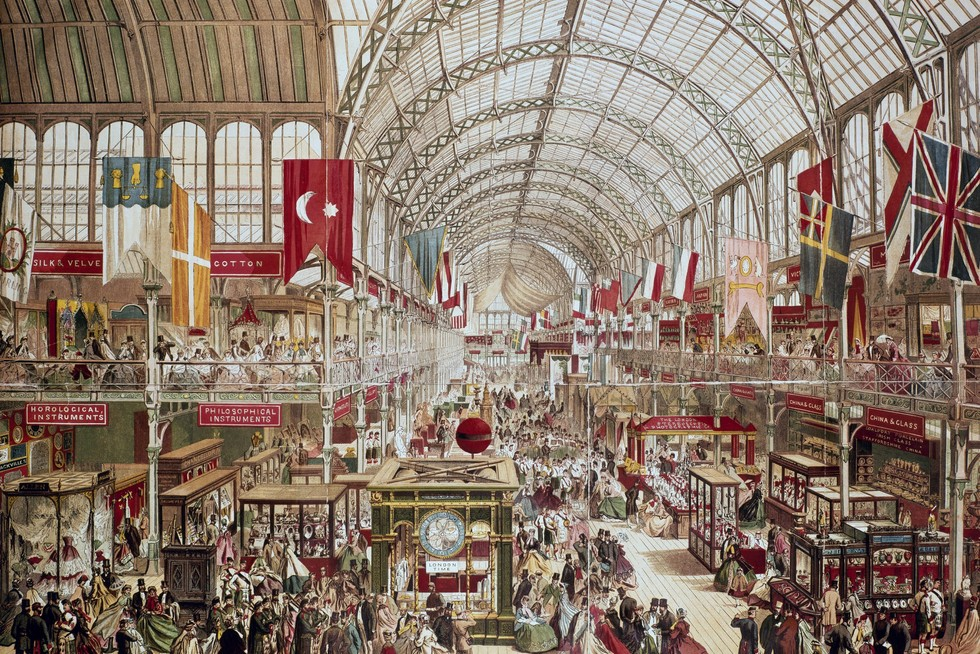

Glass and Glory: The Story of the Crystal Palace
The Crystal Palace, constructed for the Great Exhibition of 1851, showcased Victorian engineering at its peak. Through large-scale models, original sketches, and surviving artifacts, this exhibit explores how Joseph Paxton’s revolutionary glass-and-iron structure transformed architecture, industry, and global exhibitions. Visitors can walk through immersive displays that recreate the atmosphere of the Great Exhibition, offering insights into the innovations and international cultural exchange it inspired.
Victoria and Abdul

This exhibit highlights the unlikely yet influential friendship between Queen Victoria and Abdul Karim. Through personal letters, rare photographs, and recreated scenes from the royal household, visitors gain a deeper look at how Karim shaped the Queen’s worldview. Explore themes of empire, loyalty, and cultural identity, and uncover how their relationship challenged expectations within the royal court.
Life of the Dead

Discover the spiritual world of ancient Egypt by examining authentic funerary objects, amulets, sarcophagus replicas, and detailed reconstructions of burial rituals. This exhibit reveals the symbolism behind mummification, the journey through the afterlife, and the ceremonies designed to honor and protect the dead. Visitors can explore interactive displays explaining how ancient Egyptians viewed death not as an end, but as a transition to eternal life.
Historical Architecture: The Pyramids

The How Pyramids Were Built exhibit showcases the engineering genius of the ancient world. Through scale models, stone-cutting demonstrations, and animated construction sequences, this section breaks down the mathematics, astronomy, and labor required to erect these monumental structures. Visitors can examine the tools and techniques used by ancient workers and learn how such precise alignments were achieved.
Tudors: Life and Death of Elizabeth

Step into the world of Elizabethan England as you explore the life of Queen Elizabeth I. This exhibit includes portrait reproductions, clothing replicas, and accounts of key events that shaped her long reign. Discover how she navigated political intrigue, religious tension, and international diplomacy while forging a national identity that continues to influence Britain today.
Beyond Henry

Before becoming the infamous monarch, Henry VIII was a charismatic and highly educated young prince. This section examines his early life, his training in music and sport, and the hopes placed upon him as heir to the throne. Visitors can explore how these formative experiences shaped the ruler he would eventually become.
Romans

Experience the complex world of ancient Rome through displays of military gear, architectural fragments, mosaics, coins, and household objects. This exhibit reveals how Roman engineering influenced modern cities and how soldiers, citizens, and leaders shaped one of history’s most powerful empires.
Enemies of Rome

This section explores the cultures and commanders who challenged Roman authority. From the Celts and Germanic tribes to Carthage under Hannibal, visitors can study weapons, armor, and battle strategies that made Rome’s adversaries formidable foes.
Greeks

This exhibit introduces the achievements of ancient Greece, from democratic governance to advances in art, warfare, architecture, and daily life. Visitors can explore recreated domestic scenes, temple structures, and artifacts that reveal how Greek innovations shaped Western civilization.
Great Minds of Greece

Meet the thinkers who transformed the ancient world. This exhibit highlights the ideas of Socrates, Plato, Aristotle, and others through interactive displays, manuscripts, and recreated teaching spaces. Visitors can explore how their theories on ethics, logic, politics, and science continue to shape modern society.